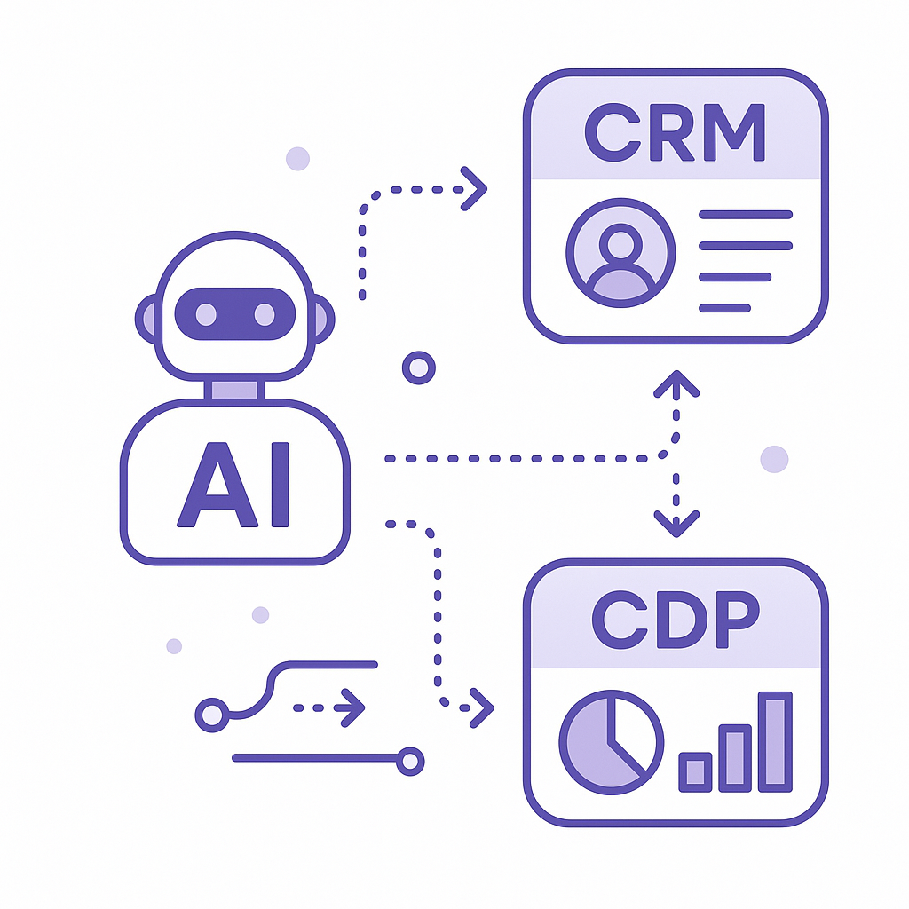
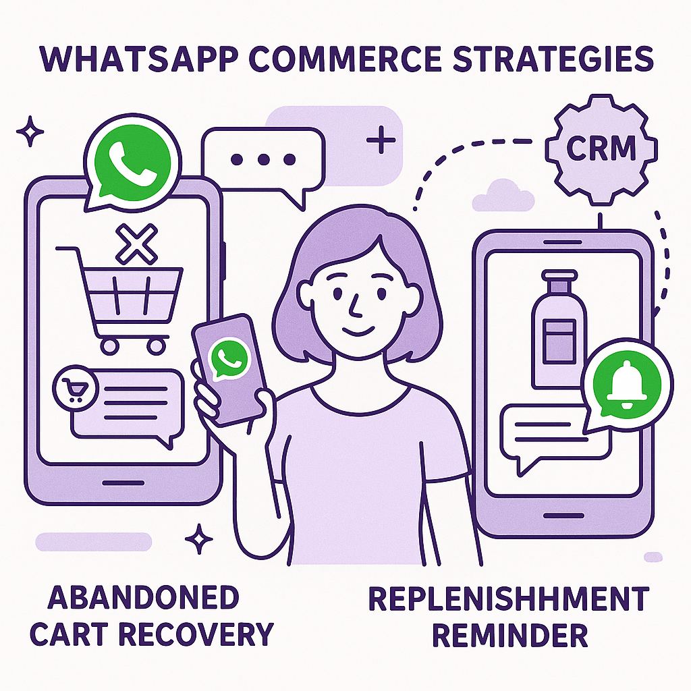

Publishing Recommendation
reviseToday's drafts generally maintain a practical and insightful tone, but several posts lean too heavily on promotion rather than providing actionable insights. The repeated emphasis on Purands AI's capabilities could be perceived as overly self-promotional. Additionally, some drafts lack specificity in detailing how strategies translate into tangible outcomes, which weakens their practical value. A revision should focus on enhancing the informative aspect and toning down the promotional language to align better with our brand voice.
LinkedIn Posts (10)
1. Retailers plan to invest deeper in AI, cybersecurity this year ★ Purands solution · high priority
CTA: How is your brand planning to use AI for customer retention?
Alternative hooks
- 63% of retailers are dialing up their AI investments this year.
- Retailers are betting big on AI for customer insights.
- AI investments are reshaping retention strategies in retail.
Research behind this post (sources, summaries & confidence)
Retailers plan to invest deeper in AI, cybersecurity this year conf 0.80 · AI in business
The increased investment in AI by retailers highlights a trend towards leveraging AI for personalization and customer insight, which are crucial for retention marketing. This shift signifies a growing recognition of AI's role in enhancing customer experience and loyalty.
Sources & what I took from each
- Retailers are increasing investments in AI and digital technology.: The Retail Dive article states that retailers are focusing on AI to enhance personalization and customer insights. ↗ read source
Statistics
- According to a Deloitte survey, 63% of retailers plan to increase AI investments in 2026.
Examples
- Walmart's investment in AI for supply chain optimization.
- Amazon's continuous development of AI-driven personalization.
Recent news
- Growing AI adoption among retailers aims to boost efficiency and customer engagement.
Original trend links
- https://www.retaildive.com/news/retailers-increase-investments-spending-ai-digital-technology/824613
Risks / caveats
- High cost of AI implementation for smaller retailers.
- Privacy concerns related to AI-driven personalization.
2. Deploying retail AI to scale personalisation and customer insight ★ Purands solution · high priority
CTA: How are you leveraging AI for personalization in your business?
Alternative hooks
- In APAC, personalization is the norm, not the exception.
- AI is transforming retail personalization in real-time.
- Dynamic personalization is key to retaining customers in APAC.
Research behind this post (sources, summaries & confidence)
Deploying retail AI to scale personalisation and customer insight conf 0.70 · AI in business
This discussion is crucial for retention marketing as it focuses on how AI can optimize retail personalization systems, enhancing customer engagement and loyalty. This is particularly relevant in the APAC region, where mobile-first and messaging-first strategies are prevalent.
Sources & what I took from each
- Focus on real-time customer insights and personalized experiences.: The article outlines the benefits of AI in personalizing retail experiences. ↗ read source
Examples
- Use of AI by Zalora for personalized marketing in Southeast Asia.
- Rakuten's deployment of AI for customer insights in Japan.
Original trend links
Risks / caveats
- Complexity in integrating AI systems with existing retail infrastructure.
- Data privacy regulations impacting AI personalization strategies.
3. Deploying retail AI to scale personalisation and customer insight ★ Purands solution · high priority
CTA: How are you currently leveraging AI to personalize customer experiences?
Alternative hooks
- Zalora and Rakuten are showing us how AI can transform retail.
- Real-time customer insights are no longer optional in APAC's retail scene.
- What's the secret to retail success in a mobile-first world? Personalized AI.
Research behind this post (sources, summaries & confidence)
Deploying retail AI to scale personalisation and customer insight conf 0.70 · AI in business
This discussion is crucial for retention marketing as it focuses on how AI can optimize retail personalization systems, enhancing customer engagement and loyalty. This is particularly relevant in the APAC region, where mobile-first and messaging-first strategies are prevalent.
Sources & what I took from each
- Focus on real-time customer insights and personalized experiences.: The article outlines the benefits of AI in personalizing retail experiences. ↗ read source
Examples
- Use of AI by Zalora for personalized marketing in Southeast Asia.
- Rakuten's deployment of AI for customer insights in Japan.
Original trend links
Risks / caveats
- Complexity in integrating AI systems with existing retail infrastructure.
- Data privacy regulations impacting AI personalization strategies.
4. AI startups ★ Purands solution · high priority
CTA: How do you see AI reshaping your customer retention strategies?

⬇ Download image{kind=link}
Image prompt · flat-vector
Caption: AI-driven customer insights in action.
Alternative hooks
- Listen Labs' $69M funding is more than just a headline.
- AI customer interviews are getting a $69M boost - here's what it means.
- Why AI-driven customer insights are becoming essential for retention.
Research behind this post (sources, summaries & confidence)
Listen Labs raises $69M after viral billboard hiring stunt to scale AI customer interviews conf 0.60 · AI startups
Listen Labs' funding to scale AI-powered customer interviews reflects a growing trend in using AI for deepening customer understanding and improving retention strategies. This approach is significant for retention marketing.
Sources & what I took from each
- Listen Labs raised $69M to scale AI customer interviews.: The VentureBeat article discusses the funding and its purpose. ↗ read source
Examples
- Listen Labs' viral marketing campaign to attract talent.
- Use of AI customer interviews by other companies like SurveyMonkey.
Recent news
- AI-driven customer insights are becoming a focal point for businesses.
Original trend links
Risks / caveats
- Risk of AI misinterpreting customer feedback.
- Dependence on AI could reduce personal customer interaction.
5. Prime Intellect raises $130M Series A to help enterprises build their own AI agents ★ Purands solution · high priority
CTA: How are you integrating AI into your customer engagement workflows?
Alternative hooks
- Prime Intellect's $130M funding is a wake-up call for enterprises.
- Enterprises are betting big on AI agents. Here's how it impacts retention.
- What's the real value of AI agents in retention marketing?
Research behind this post (sources, summaries & confidence)
Prime Intellect raises $130M Series A to help enterprises build their own AI agents conf 0.60 · Practical AI agents for marketing ops
Prime Intellect's funding to enable enterprises to build AI agents can impact retention marketing by providing tools to automate and enhance customer engagement and retention workflows.
Sources & what I took from each
- Prime Intellect raised $130M for enterprise AI agent solutions.: The Techmeme article confirms the Series A funding and its intended use. ↗ read source
Examples
- Enterprise AI solutions similar to those offered by IBM's Watson.
- Custom AI agent development by companies like UiPath.
Original trend links
Risks / caveats
- Challenges in integrating AI agents with existing systems.
- Potential for AI solutions to overpromise and underdeliver.
6. Slack's Slackbot CRM Integration ★ Purands solution · high priority
CTA: How are you integrating CRM data with your communication tools?
{kind=link}
Image prompt · isometric-flat
Caption: The evolution of Slack as a CRM tool.
Alternative hooks
- Remember when Slack was just a chat tool?
- Is your CRM system pulling its weight?
- Slackbot's new tricks are changing the CRM game.
Research behind this post (sources, summaries & confidence)
Slack’s Slackbot can now pull your CRM data, generate charts, and send DocuSigns — all from a chat message. conf 0.50 · CRM strategy and lifecycle messaging
The integration of CRM data and automation capabilities into Slack's Slackbot represents a significant advancement in lifecycle messaging and CRM strategy. This development could streamline processes and enhance efficiency for businesses, particularly in retention marketing contexts.
Sources & what I took from each
- Slackbot's new capabilities include pulling CRM data, generating charts, and sending DocuSigns.: The source from VentureBeat confirms Slackbot's new integrations with CRM systems. ↗ read source
Examples
- Salesforce's integration with Slack has been a focus since the acquisition.
- DocuSign integrations with messaging platforms have been growing in general.
Recent news
- Salesforce's acquisition of Slack in 2020 has led to increased integrations.
Original trend links
Risks / caveats
- Dependence on third-party integrations can lead to security risks.
- Not all CRM systems may be compatible with Slackbot's new features.
7. WhatsApp commerce: abandoned cart, replenishment, and broadcast best practices ★ Purands solution · high priority
CTA: Let's talk about how this can transform your approach to retention marketing.

⬇ Download image{kind=link}
Image prompt · flat-vector
Caption: WhatsApp commerce: Engaging customers effectively.
Alternative hooks
- In APAC, your next customer might just be a WhatsApp message away.
- Ever wondered why some brands thrive on WhatsApp while others falter?
- WhatsApp isn't just for chats. It's a commerce powerhouse in APAC.
Research behind this post (sources, summaries & confidence)
WhatsApp commerce: abandoned cart, replenishment, and broadcast best practices conf 0.50 · WhatsApp commerce
Optimizing WhatsApp commerce strategies is crucial for retention marketing, especially in APAC where messaging apps dominate. Understanding best practices in this area can significantly improve customer engagement and reduce churn.
Sources & what I took from each
- Discussion on best practices for WhatsApp commerce.: The GitHub repository discusses potential strategies for WhatsApp commerce. ↗ read source
Examples
- WhatsApp Business API usage by companies like Wish and JioMart.
- Line's similar commerce strategies in Japan.
Recent news
- WhatsApp Business API expands to new markets to enhance commerce capabilities.
Original trend links
Risks / caveats
- Dependence on WhatsApp's platform policies.
- Potential privacy concerns with message tracking.
8. Home Depot adds 7-Eleven, Jimmy John’s as pro loyalty partners
CTA: How do you see partnerships like these impacting customer loyalty?
Alternative hooks
- Home Depot just teamed up with 7-Eleven and Jimmy John’s for its loyalty program.
- Why is Home Depot partnering with 7-Eleven and Jimmy John's?
- Strategic alliances in loyalty programs: Home Depot shows the way.
Research behind this post (sources, summaries & confidence)
Home Depot adds 7-Eleven, Jimmy John’s as pro loyalty partners conf 0.70 · Loyalty program design
The expansion of loyalty partnerships by major retailers like Home Depot indicates a trend towards enhancing customer retention through strategic alliances. This is relevant for understanding effective loyalty program strategies.
Sources & what I took from each
- Home Depot has expanded its loyalty program with new partners.: The Retail Dive article confirms Home Depot's expansion of its loyalty program. ↗ read source
Examples
- Home Depot's loyalty program now includes 7-Eleven and Jimmy John's.
- Similar strategies employed by Lowe's with its own loyalty partnerships.
Original trend links
Risks / caveats
- Potential dilution of brand identity with too many partners.
- Complexity in managing multiple partner relationships.
9. Anthropic launches Cowork, a Claude Desktop agent that works in your files — no coding required
CTA: Have you tried no-code AI tools in your operations? What was your experience?
Alternative hooks
- The rise of no-code tools is changing the game for AI in marketing operations.
- Anthropic's new Cowork agent might be the no-code AI tool you've been waiting for.
- Imagine using AI for file operations without writing a single line of code.
Research behind this post (sources, summaries & confidence)
Anthropic launches Cowork, a Claude Desktop agent that works in your files — no coding required conf 0.70 · Practical AI agents for marketing ops
The launch of Cowork by Anthropic highlights the push for AI agents that require minimal technical expertise, facilitating broader adoption in marketing operations and potentially enhancing customer engagement processes.
Sources & what I took from each
- Anthropic's Cowork agent enables file operations without coding.: The VentureBeat article details the capabilities of the Cowork agent. ↗ read source
Examples
- Similar no-code AI tools include Microsoft's Power Automate.
- Google's AppSheet provides no-code app development.
Recent news
- The rise of no-code tools is democratizing AI usage across industries.
Original trend links
Risks / caveats
- Limitations in customization may restrict advanced users.
- Security concerns with file access by AI.
10. Japan’s answer to its worker shortage: An AI model for 10 million robots
CTA: What are your thoughts on AI's role in reshaping labor markets?
{kind=link}
Image prompt · isometric-flat
Caption: Japan's strategy for AI-powered robots.
Alternative hooks
- Japan's bold AI robot plan aims to tackle labor shortages head-on.
- 10 million robots by 2040: Japan's ambitious strategy for an aging workforce.
- Can AI-powered robots fill the labor gap in Japan?
Research behind this post (sources, summaries & confidence)
Japan’s answer to its worker shortage: An AI model for 10 million robots conf 0.60 · AI startups
Japan's strategy to address labor shortages with AI-powered robots could impact the APAC region's commerce and tech ecosystem. This approach may influence retention marketing by altering how businesses interact with customers and automate processes.
Sources & what I took from each
- Japan is formalizing a national strategy for AI-powered robots.: The article details Japan's focus on AI and robotics to tackle labor shortages. ↗ read source
Statistics
- Japan aims to deploy 10 million AI-powered robots by 2040.
Examples
- Toyota's AI-driven robotics initiatives.
- SoftBank's Pepper robot used in retail and customer service.
Recent news
- Japan's aging population accelerates the development of AI robotics.
Original trend links
Risks / caveats
- High cost and complexity of deploying such large-scale robotics.
- Potential job displacement concerns.
Today's Trends
| # | Trend | Category | Why it matters |
|---|---|---|---|
| 1 | Slack’s Slackbot can now pull your CRM data, generate charts, and send DocuSigns — all from a chat message.
source |
CRM strategy and lifecycle messaging | The integration of CRM data and automation capabilities into Slack's Slackbot represents a significant advancement in lifecycle messaging and CRM strategy. This development could streamline processes and enhance efficiency for businesses, particularly in retention marketing contexts. |
| 2 | Retailers plan to invest deeper in AI, cybersecurity this year
source |
AI in business | The increased investment in AI by retailers highlights a trend towards leveraging AI for personalization and customer insight, which are crucial for retention marketing. This shift signifies a growing recognition of AI's role in enhancing customer experience and loyalty. |
| 3 | Deploying retail AI to scale personalisation and customer insight
source |
AI in business | This discussion is crucial for retention marketing as it focuses on how AI can optimize retail personalization systems, enhancing customer engagement and loyalty. This is particularly relevant in the APAC region, where mobile-first and messaging-first strategies are prevalent. |
| 4 | Japan’s answer to its worker shortage: An AI model for 10 million robots
source |
AI startups | Japan's strategy to address labor shortages with AI-powered robots could impact the APAC region's commerce and tech ecosystem. This approach may influence retention marketing by altering how businesses interact with customers and automate processes. |
| 5 | Home Depot adds 7-Eleven, Jimmy John’s as pro loyalty partners
source |
Loyalty program design | The expansion of loyalty partnerships by major retailers like Home Depot indicates a trend towards enhancing customer retention through strategic alliances. This is relevant for understanding effective loyalty program strategies. |
| 6 | Listen Labs raises $69M after viral billboard hiring stunt to scale AI customer interviews
source |
AI startups | Listen Labs' funding to scale AI-powered customer interviews reflects a growing trend in using AI for deepening customer understanding and improving retention strategies. This approach is significant for retention marketing. |
| 7 | Prime Intellect raises $130M Series A to help enterprises build their own AI agents
source |
Practical AI agents for marketing ops | Prime Intellect's funding to enable enterprises to build AI agents can impact retention marketing by providing tools to automate and enhance customer engagement and retention workflows. |
| 8 | Anthropic launches Cowork, a Claude Desktop agent that works in your files — no coding required
source |
Practical AI agents for marketing ops | The launch of Cowork by Anthropic highlights the push for AI agents that require minimal technical expertise, facilitating broader adoption in marketing operations and potentially enhancing customer engagement processes. |
| 9 | WhatsApp commerce: abandoned cart, replenishment, and broadcast best practices
source |
WhatsApp commerce | Optimizing WhatsApp commerce strategies is crucial for retention marketing, especially in APAC where messaging apps dominate. Understanding best practices in this area can significantly improve customer engagement and reduce churn. |
| 10 | Deploying retail AI to scale personalisation and customer insight
source |
AI in business | Retail AI deployment for personalization is a key topic as businesses seek to enhance customer experiences and retention. This is particularly relevant in regions focusing on mobile-first and data-driven strategies. |
Risk Assessment
No risks flagged.
Suggested LinkedIn Comments (30)
Open each post, then paste the copied comment. Nothing is posted automatically.
1. insight · Nefamou Hélène — Artificial Intelligence is changing the way we work, regardless of your professi
Post by: Nefamou Hélène
Why it works: It shifts the focus from general AI adoption to practical application, adding depth to the conversation.
↗ Open LinkedIn post to paste comment2. insight · Jaslam Poolakkal — ELIZA didn't reveal machine intelligence. It revealed human perception. Nearly
Post by: Jaslam Poolakkal
Why it works: It highlights a historical perspective that remains relevant, offering a cautionary note on AI perception.
↗ Open LinkedIn post to paste comment3. insight · Phillip Williams Jr. — Integrating Artificial Intelligence (A.I.) with Customer Service Operations
Post by: Phillip Williams Jr.
Why it works: It reframes the post to emphasize AI as an enhancement rather than a replacement, adding a balanced view.
↗ Open LinkedIn post to paste comment4. opinion · Dr. Petar J. — Artificial intelligence is rapidly transforming financial services, but technolo
Post by: Dr. Petar J.
Why it works: It underscores the importance of leadership in AI implementation, aligning with the post's theme while adding emphasis on ethical implications.
↗ Open LinkedIn post to paste comment5. expansion · Ajit Jaokar — #ArtificialIntelligence #MachineLearning #DeepLearning #AIEngineering #Generativ
Post by: Ajit Jaokar
Why it works: It broadens the discussion from skills to mindset, adding another layer to the conversation about future readiness.
↗ Open LinkedIn post to paste comment6. respectful challenge · meteoriQs Technologies Private Limited — AI Agents & Autonomous Workflows are intelligent AI systems that autonomously pl
Post by: meteoriQs Technologies Private Limited
Why it works: It introduces a cautionary note about potential pitfalls, encouraging a balanced view of autonomous systems.
↗ Open LinkedIn post to paste comment7. insight · Damilare Ishola — 🤖🚀 WE ARE HIRING – AI & ARTIFICIAL INTELLIGENCE PROFESSIONALS 📩 Apply Now: favo
Post by: Damilare Ishola
Why it works: It adds depth by focusing on specialization, offering a nuanced view of the hiring landscape in AI.
↗ Open LinkedIn post to paste comment8. opinion · Bill Wood — As Artificial Intelligence continues to reshape and challenge organizational str
Post by: Bill Wood
Why it works: It encourages proactive strategy in AI adoption, reinforcing the post’s message of opportunity in change.
↗ Open LinkedIn post to paste comment9. opinion · Sarah Mooney — Artificial intelligence is changing the way we work, but the biggest transformat
Post by: Sarah Mooney
Why it works: It champions the human-AI collaboration angle, reinforcing the post's central message with conviction.
↗ Open LinkedIn post to paste comment10. expansion · MEHMET AYYILDIZ — Artificial Intelligence is creating unprecedented wealth—but who will benefit fr
Post by: MEHMET AYYILDIZ
Why it works: It acknowledges the proposal while adding context on socioeconomic impacts, enriching the discussion.
↗ Open LinkedIn post to paste comment11. insight · Justin Tanner — I am sharing an exciting opportunity for professionals working at the intersecti
Post by: Justin Tanner
Why it works: Connects the role to the broader impact on workforce development, offering a concrete perspective on its significance.
↗ Open LinkedIn post to paste comment12. expansion · Jennifer Prosek — At this year’s Milken Institute Global Conference, I asked Kamal Bhatia, CEO of
Post by: Jennifer Prosek
Why it works: Expands on the idea by emphasizing the irreplaceable nature of human-centric skills in the AI era.
↗ Open LinkedIn post to paste comment13. insight · Katya Fuentes — I'm hiring for a few roles at Comp AI: • Sr. PMM • Sr. Growth Engineer One of
Post by: Katya Fuentes
Why it works: Highlights the importance of culture in fast-growing startups, providing a fresh angle on the hiring post.
↗ Open LinkedIn post to paste comment14. opinion · Will DePeri — A few weeks ago, I talked about the arrival of a new era: Burning through AI cre
Post by: Will DePeri
Why it works: Uses humor to reinforce a practical point about tech spending, adding value through a critical lens.
↗ Open LinkedIn post to paste comment15. insight · Ishan Shah — We're hiring a Lifecycle Marketer at Profound!! If you love building nurture f
Post by: Ishan Shah
Why it works: Focuses on the unique opportunity and creative potential of the role, offering a specific insight into its impact.
↗ Open LinkedIn post to paste comment16. opinion · Harry R. — The thought of the week: How many AI startups are stirring the pot?? Estimates
Post by: Harry R.
Why it works: Provides a clear opinion on the competitive nature of the AI startup space, emphasizing the need for differentiation.
↗ Open LinkedIn post to paste comment17. insight · Dr. Lawrence A. Souza, DBA, CRE, FRICS, CCIM — Norm AI, a startup helping automate services for law firms, raised $120 million
Post by: Dr. Lawrence A. Souza, DBA, CRE, FRICS, CCIM
Why it works: Connects the funding news to broader trends in AI adoption, offering a perspective on industry transformation.
↗ Open LinkedIn post to paste comment18. insight · Damilare Ishola — 🤖🚀 WE ARE HIRING – AI & ARTIFICIAL INTELLIGENCE PROFESSIONALS 📩 Apply Now: favo
Post by: Damilare Ishola
Why it works: Emphasizes the strategic importance of talent matching in advancing AI technology, adding depth to the hiring post.
↗ Open LinkedIn post to paste comment19. insight · Samuel Scarpino — Four years ago, I joined the Institute for Experiential AI at Northeastern Unive
Post by: Samuel Scarpino
Why it works: Connects the announcement to the broader impact on healthcare and research, emphasizing the importance of responsible AI.
↗ Open LinkedIn post to paste comment20. insight · Kumud Deepali Rudraraju, SHRM CP — The distance between an idea and a live product just collapsed. I recently laun
Post by: Kumud Deepali Rudraraju, SHRM CP
Why it works: Addresses the strategic advantage of owning distribution, offering a concrete takeaway from the post.
↗ Open LinkedIn post to paste comment21. insight · Damilare Bello — 🚀🤖 WE ARE HIRING – AI, DATA SCIENCE & STARTUP TECHNOLOGY PROFESSIONALS 📩 Apply
Post by: Damilare Bello
Why it works: Highlights the dual need for technical skills and startup adaptability, adding depth to the hiring conversation.
↗ Open LinkedIn post to paste comment22. insight · Tarsha Lomax — This should be fun 😏 I'm recruiting for a Founding Full Stack Engineer with an A
Post by: Tarsha Lomax
Why it works: Focuses on the importance of customer-centric development, adding a practical layer to the recruitment criteria.
↗ Open LinkedIn post to paste comment23. insight · Sally Ann Frank — The question isn’t just, “Can we build it?” It’s, “Can we scale it, govern it,
Post by: Sally Ann Frank
Why it works: Addresses the overlooked challenges of scaling and governance, offering practical advice for startups.
↗ Open LinkedIn post to paste comment24. insight · John Dolan — HEAD OF AI DEPLOYMENT needed at one of our Agentic AI STARTUP clients! Hybrid 3x
Post by: John Dolan
Why it works: Emphasizes the often underappreciated execution aspect, adding value for potential candidates and recruiters.
↗ Open LinkedIn post to paste comment25. insight · Aarnav Kumar — Building a Local RAG Pipeline for STEM Education Large Language Models are incr
Post by: Aarnav Kumar
Why it works: Offers a technical perspective on improving AI accuracy, adding technical depth to the discussion.
↗ Open LinkedIn post to paste comment26. insight · Alexandra Birch — Today, together with Rico Sennrich and Barry Haddow, we won the test of time awa
Post by: Alexandra Birch
Why it works: Connects past innovations to present applications, showing continuity and evolution in AI developments.
↗ Open LinkedIn post to paste comment27. insight · meteoriQs Technologies Private Limited — AI Agents & Autonomous Workflows are intelligent AI systems that autonomously pl
Post by: meteoriQs Technologies Private Limited
Why it works: Highlights the integration challenge, providing a realistic view on implementing autonomous workflows.
↗ Open LinkedIn post to paste comment28. insight · Thad Lurie, CAE, AAiP, CIP — "Large language models are not reasoning machines. They’re plausibility engines.
Post by: Thad Lurie, CAE, AAiP, CIP
Why it works: Clarifies a common misconception about LLMs, grounding the discussion in practical AI limitations.
↗ Open LinkedIn post to paste comment29. insight · Edosa Odaro — One of the biggest mistakes people make with AI is believing that because it sou
Post by: Edosa Odaro
Why it works: Addresses the psychological impact of AI, offering a nuanced perspective on user interaction with AI systems.
↗ Open LinkedIn post to paste comment30. insight · Amy English — Agentic Engineering Leader | Truist This may be one of the most exciting AI lead
Post by: Amy English
Why it works: Stresses the importance of practical application in AI leadership, aligning with the post's call for impactful solutions.
↗ Open LinkedIn post to paste comment